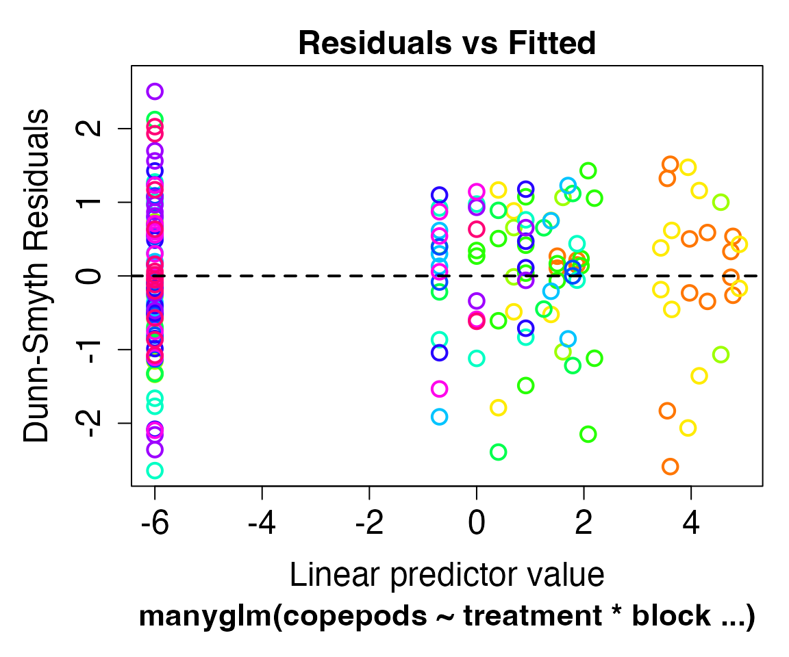

mvabund
mvabund.RmdThis vignette takes you through the main functions in
mvabund to help you get started! We recommend reading the
manuscript
associated with the package and taking a look at
Other Resources in our README.
First things first
Let’s load the package and get our hands on the Tasmania
data set to look at the effects of disturbance treatment on invertebrate
abundances. Note that the Tasmania data set is a list
object. We will only look at the copepods data frame for
this walk-through. The copepods data frame can be accessed
using Tasmania$copepods or the attach()
function which will make the contents of Tasmania
searchable.
library(mvabund)
data(Tasmania)
attach(Tasmania)
skimr::skim(copepods) # Great function to get an overview of the data| Name | copepods |
| Number of rows | 16 |
| Number of columns | 12 |
| _______________________ | |
| Column type frequency: | |
| numeric | 12 |
| ________________________ | |
| Group variables | None |
Variable type: numeric
| skim_variable | n_missing | complete_rate | mean | sd | p0 | p25 | p50 | p75 | p100 | hist |
|---|---|---|---|---|---|---|---|---|---|---|
| Ameira | 0 | 1 | 55.44 | 46.60 | 4 | 6.75 | 58.5 | 92.25 | 142 | ▇▂▃▃▂ |
| Adopsyllus | 0 | 1 | 0.69 | 1.25 | 0 | 0.00 | 0.0 | 1.00 | 4 | ▇▂▁▁▁ |
| Ectinosoma | 0 | 1 | 1.31 | 2.30 | 0 | 0.00 | 0.0 | 1.25 | 7 | ▇▁▁▁▁ |
| Ectinosomat | 0 | 1 | 4.50 | 4.46 | 0 | 1.00 | 3.5 | 5.50 | 15 | ▇▃▂▁▂ |
| Haloschizo | 0 | 1 | 0.12 | 0.50 | 0 | 0.00 | 0.0 | 0.00 | 2 | ▇▁▁▁▁ |
| Lepta.A | 0 | 1 | 40.69 | 47.15 | 0 | 3.00 | 28.0 | 57.25 | 151 | ▇▂▁▂▁ |
| Lepta.B | 0 | 1 | 1.44 | 2.92 | 0 | 0.00 | 0.0 | 1.25 | 11 | ▇▁▁▁▁ |
| Lepta.C | 0 | 1 | 12.75 | 44.73 | 0 | 0.00 | 0.0 | 1.50 | 180 | ▇▁▁▁▁ |
| Mictyricola | 0 | 1 | 1.31 | 2.33 | 0 | 0.00 | 0.0 | 1.50 | 8 | ▇▁▁▁▁ |
| Parevansula | 0 | 1 | 0.25 | 0.58 | 0 | 0.00 | 0.0 | 0.00 | 2 | ▇▁▁▁▁ |
| Quin | 0 | 1 | 0.44 | 0.96 | 0 | 0.00 | 0.0 | 0.00 | 3 | ▇▁▁▁▁ |
| Rhizothrix | 0 | 1 | 0.81 | 2.04 | 0 | 0.00 | 0.0 | 0.00 | 6 | ▇▁▁▁▁ |
Visualise the multivariate data
We first need to turn our data into a mvabund object so
functions for this package and work with the data
copepod_abund <- mvabund(copepods)Now lets take a look at abundance for each species across our
treatment sites (Disturbed vs. Undisturbed). Observations were collected
using a spatially blocked design where researchers took four samples at
each block (2 per treatment). We can set the colour (col)
of the points to represent that four sampling blocks
plot(copepod_abund~treatment, col = block)
#> Overlapping points were shifted along the y-axis to make them visible.
#>
#> PIPING TO 2nd MVFACTORFitting Predictive Models
It was hypothesised that the abundance of Ameira and
Ectinosoma was reduced in Disturbed sites, whereas the
abundance of Mictyricola may have increased. Lets test this
hypothesis using the manyglm() function. This function fits
a generalised linear model for each species. We specified
family = "negative.binomial" as count data tends to follow
a negative binomial distribution. Other distributions are available too!
See ?manyglm()
cope.nb <- manyglm(copepods ~ treatment*block, family = "negative.binomial")Checking Model Assumptions
Before we look at the model output, we should check on the model residuals. What we want to see is little pattern as this implies that our choice of negative binomial distribution is appropriate.
plot(cope.nb)
Now, lets proceed to check on the mean-variance
relationship. We want to to see if the mean-variance
relationship of our data adheres to that of a negative binomial
distribution which tends to be quadratic rather than linear. The
meanvar.plot() function plots the sample variance against
the sample mean for each species within each factor level of
(tr.block). A quadratic relationship seems appropriate for
our sample mean and variance.
meanvar.plot(copepods~tr.block, col = treatment)
#> START SECTION 2
#> Plotting if overlay is TRUE
#> using grouping variable tr.block 46 mean values were 0 and could
#> not be included in the log-plot
#> using grouping variable tr.block 49 variance values were 0 and could not
#> be included in the log-plot#> FINISHED SECTION 2Hypothesis Testing
To test whether treatment and block had an
effect on the abundances of copepods we can use the anova()
function. This function returns a Analysis of Deviance table which tests
the significance of each model term. Setting
p.uni = "adjusted" allows for our p-values to be adjusted
for multiple testing of different species.
anova(cope.nb, p.uni = "adjusted")
#> Time elapsed: 0 hr 0 min 4 sec
#> Analysis of Deviance Table
#>
#> Model: copepods ~ treatment * block
#>
#> Multivariate test:
#> Res.Df Df.diff Dev Pr(>Dev)
#> (Intercept) 15
#> treatment 14 1 32.52 0.042 *
#> block 11 3 151.87 0.001 ***
#> treatment:block 8 3 37.41 0.073 .
#> ---
#> Signif. codes: 0 '***' 0.001 '**' 0.01 '*' 0.05 '.' 0.1 ' ' 1
#>
#> Univariate Tests:
#> Ameira Adopsyllus Ectinosoma
#> Dev Pr(>Dev) Dev Pr(>Dev) Dev Pr(>Dev)
#> (Intercept)
#> treatment 6.257 0.173 0.032 0.972 7.026 0.146
#> block 12.615 0.153 17.691 0.048 15.361 0.073
#> treatment:block 6.349 0.499 1.295 0.882 0.836 0.882
#> Ectinosomat Haloschizo Lepta.A
#> Dev Pr(>Dev) Dev Pr(>Dev) Dev Pr(>Dev)
#> (Intercept)
#> treatment 0.366 0.953 1.497 0.822 0.281 0.953
#> block 10.92 0.184 3.742 0.184 20.756 0.017
#> treatment:block 1.122 0.882 0 0.882 13.072 0.169
#> Lepta.B Lepta.C Mictyricola
#> Dev Pr(>Dev) Dev Pr(>Dev) Dev Pr(>Dev)
#> (Intercept)
#> treatment 0.575 0.953 2.141 0.758 7.093 0.146
#> block 8.8 0.184 17.419 0.051 11.415 0.184
#> treatment:block 7.402 0.461 0.34 0.882 5.268 0.499
#> Parevansula Quin Rhizothrix
#> Dev Pr(>Dev) Dev Pr(>Dev) Dev Pr(>Dev)
#> (Intercept)
#> treatment 0 0.972 5.385 0.233 1.869 0.758
#> block 6.1 0.184 9.44 0.184 17.613 0.051
#> treatment:block 1.726 0.847 0 0.882 0 0.882
#> Arguments:
#> Test statistics calculated assuming uncorrelated response (for faster computation)
#> P-value calculated using 999 iterations via PIT-trap resampling.We can see that there is a significant effect of the treatment factor meaning that treatment has a significant multiplicative effect on mean abundance. The interaction between blocks and treatments is not significant, meaning that the multiplicative treatment effect is consistent across blocks.
If you do not have a specific hypothesis in mind that you want to
test, and are instead interested in which model terms are statistically
significant, then the summary() function will come in
handy. However results aren’t quite as trustworthy as for
anova(). The reason is that re-samples are taken under the
alternative hypothesis for summary(), where there is a
greater chance of fitted values being zero, especially for rarer taxa
(e.g. if there is a treatment combination in which a taxon is never
present). Abundances don’t re-sample well if their predicted mean is
zero.
summary(cope.nb)
#>
#> Test statistics:
#> wald value Pr(>wald)
#> (Intercept) 18.493 0.001 ***
#> treatmentUndisturbed 3.330 0.258
#> block2 4.710 0.048 *
#> block3 6.650 0.001 ***
#> block4 3.435 0.157
#> treatmentUndisturbed:block2 2.747 0.264
#> treatmentUndisturbed:block3 1.615 0.427
#> treatmentUndisturbed:block4 4.262 0.046 *
#> ---
#> Signif. codes: 0 '***' 0.001 '**' 0.01 '*' 0.05 '.' 0.1 ' ' 1
#>
#> Test statistic: 14.81, p-value: 0.003
#> Arguments:
#> Test statistics calculated assuming response assumed to be uncorrelated
#> P-value calculated using 999 resampling iterations via pit.trap resampling (to account for correlation in testing).If obtaining predicted values from the model is the goal, you may use
the predict() function. Note that
type = response will produce values on the scale of the
response variable (i.e. counts)
predict(cope.nb, type = "response")
#> Ameira Adopsyllus Ectinosoma Ectinosomat Haloschizo Lepta.A
#> B1D1 53.0 3.678794e-07 3.678794e-07 8.0 3.678794e-07 63.5
#> B1D2 53.0 3.678794e-07 3.678794e-07 8.0 3.678794e-07 63.5
#> B1U1 114.5 3.678794e-07 1.000000e+00 7.0 1.000000e+00 134.0
#> B1U2 114.5 3.678794e-07 1.000000e+00 7.0 1.000000e+00 134.0
#> B2D1 4.5 3.678794e-07 3.678794e-07 9.0 3.678794e-07 31.0
#> B2D2 4.5 3.678794e-07 3.678794e-07 9.0 3.678794e-07 31.0
#> B2U1 74.0 3.678794e-07 3.678794e-07 4.5 3.678794e-07 51.5
#> B2U2 74.0 3.678794e-07 3.678794e-07 4.5 3.678794e-07 51.5
#> B3D1 6.5 3.678794e-07 3.678794e-07 2.5 3.678794e-07 2.0
#> B3D2 6.5 3.678794e-07 3.678794e-07 2.5 3.678794e-07 2.0
#> B3U1 35.0 5.000000e-01 2.500000e+00 2.5 3.678794e-07 1.5
#> B3U2 35.0 5.000000e-01 2.500000e+00 2.5 3.678794e-07 1.5
#> B4D1 37.0 2.500000e+00 5.000000e-01 1.0 3.678794e-07 38.0
#> B4D2 37.0 2.500000e+00 5.000000e-01 1.0 3.678794e-07 38.0
#> B4U1 119.0 2.500000e+00 6.500000e+00 1.5 3.678794e-07 4.0
#> B4U2 119.0 2.500000e+00 6.500000e+00 1.5 3.678794e-07 4.0
#> Lepta.B Lepta.C Mictyricola Parevansula Quin
#> B1D1 6.000000e+00 3.678794e-07 3.678794e-07 3.678794e-07 3.678794e-07
#> B1D2 6.000000e+00 3.678794e-07 3.678794e-07 3.678794e-07 3.678794e-07
#> B1U1 3.678794e-07 3.678794e-07 3.678794e-07 5.000000e-01 2.500000e+00
#> B1U2 3.678794e-07 3.678794e-07 3.678794e-07 5.000000e-01 2.500000e+00
#> B2D1 1.500000e+00 3.678794e-07 5.500000e+00 1.000000e+00 3.678794e-07
#> B2D2 1.500000e+00 3.678794e-07 5.500000e+00 1.000000e+00 3.678794e-07
#> B2U1 3.500000e+00 3.678794e-07 3.678794e-07 5.000000e-01 3.678794e-07
#> B2U2 3.500000e+00 3.678794e-07 3.678794e-07 5.000000e-01 3.678794e-07
#> B3D1 3.678794e-07 9.500000e+01 5.000000e-01 3.678794e-07 3.678794e-07
#> B3D2 3.678794e-07 9.500000e+01 5.000000e-01 3.678794e-07 3.678794e-07
#> B3U1 3.678794e-07 5.000000e+00 5.000000e-01 3.678794e-07 3.678794e-07
#> B3U2 3.678794e-07 5.000000e+00 5.000000e-01 3.678794e-07 3.678794e-07
#> B4D1 5.000000e-01 2.000000e+00 4.000000e+00 3.678794e-07 3.678794e-07
#> B4D2 5.000000e-01 2.000000e+00 4.000000e+00 3.678794e-07 3.678794e-07
#> B4U1 3.678794e-07 3.678794e-07 3.678794e-07 3.678794e-07 1.000000e+00
#> B4U2 3.678794e-07 3.678794e-07 3.678794e-07 3.678794e-07 1.000000e+00
#> Rhizothrix
#> B1D1 5.000000e-01
#> B1D2 5.000000e-01
#> B1U1 6.000000e+00
#> B1U2 6.000000e+00
#> B2D1 3.678794e-07
#> B2D2 3.678794e-07
#> B2U1 3.678794e-07
#> B2U2 3.678794e-07
#> B3D1 3.678794e-07
#> B3D2 3.678794e-07
#> B3U1 3.678794e-07
#> B3U2 3.678794e-07
#> B4D1 3.678794e-07
#> B4D2 3.678794e-07
#> B4U1 3.678794e-07
#> B4U2 3.678794e-07